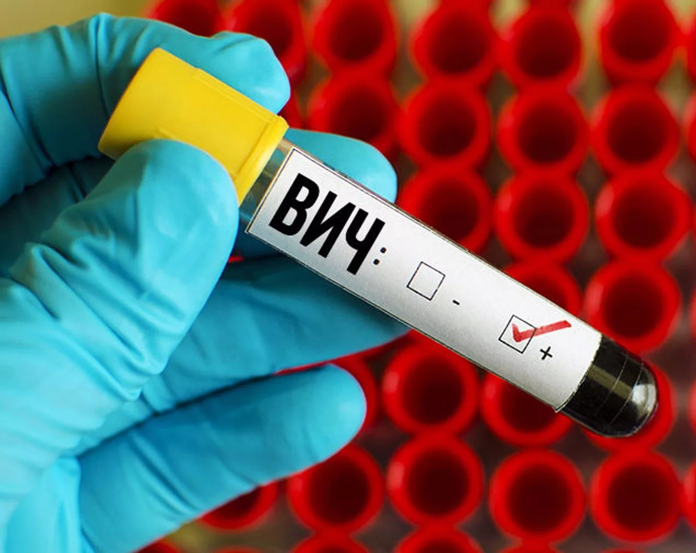
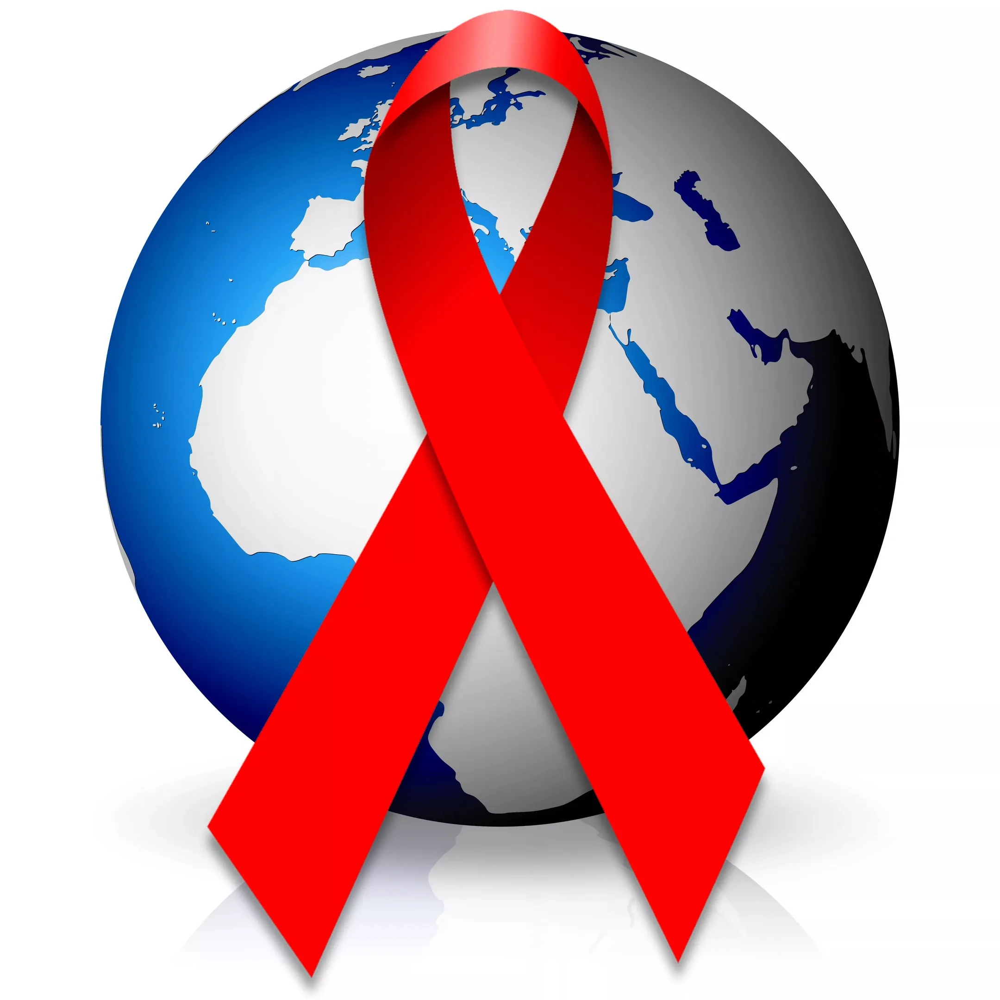

Общая сведения
СПИД является терминальной стадией ВИЧ-инфекции, период от инфицирования вирусом иммунодефицита человека до развития СПИДа длится в среднем 9—11 лет. Большинство симптомов вызваны оппортунистическими инфекциями — бактериальными, вирусными, грибковыми или паразитическими инфекциями, которые не развиваются у лиц с полноценной иммунной системой и поражают практически все системы органов ВИЧ-инфицированные имеют повышенный уровень онкологических заболеваний, например, саркомы Капоши, ракa шейки матки, а также лимфом. Кроме того, ВИЧ-инфицированные часто имеют системные симптомы инфекций, например, лихорадка, повышенное потоотделение по ночам, опухание лимфатических узлов, озноб, слабость и потеря веса. Разные оппортунистические инфекции развиваются у ВИЧ-инфицированных в зависимости от географического положения больного.
Лёгочные инфекции
Пневмоцистная пневмония (вызываемая Pneumocystis jirovecii) является относительно редким заболеванием у иммунокомпетентных лиц, но значительно распространена среди ВИЧ-инфицированных лиц. До разработки эффективных методов диагностики, лечения и профилактики ВИЧ-инфекции в западных странах пневмоцистная пневмония была одной из непосредственных причин смертей ВИЧ-инфицированных. В развивающихся странах пневмоцистная пневмония остаётся одним из первых признаков СПИДа у недиагностированных лиц, хотя, как правило, не развивается при числе CD4-лимфоцитов менее 200 в микролитре крови.
Среди других заболеваний, ассоциированных с ВИЧ-инфекцией, отдельно можно выделить туберкулёз, так как последний передаётся иммунокомпетентным лицам воздушно-капельным путём и трудно поддаётся лечению[42]. Согласно ВОЗ, коинфекция туберкулёза и ВИЧ является одной из основных проблем мирового здравоохранения: в 2007 умерло более 456000 ВИЧ-положительных больных туберкулёзом, что составляет треть от общего числа смертей от туберкулёза и примерно четверть от двух миллионов смертей от ВИЧ-инфекции в этом году.
Заболеваемость туберкулёзом значительно снижена в странах Запада, однако в развивающихся странах эпидемиологическая ситуация и по ВИЧ-инфекции, и по туберкулёзу остаётся тяжёлой. На ранних стадиях ВИЧ-инфекции (число CD4-лимфоцитов превышает 300 клеток в 1 мкл), туберкулёз развивается как заболевание лёгких. На поздних стадиях ВИЧ-инфекции клиническое проявление туберкулёза часто атипичное, развивается внелёгочное системное заболевание. Симптомы, как правило, конституциональны и затрагивают костный мозг, кости, мочеполовую систему, желудочно-кишечный тракт, печень, периферические лимфатические узлы и центральную нервную систему.
Желудочно-кишечные инфекции
Эзофагит — воспаление слизистой оболочки нижней части пищевода. У ВИЧ-инфицированных эзофагит, как правило, бывает грибковой (кандидоз) или вирусной (вирус простого герпеса первого типа, цитомегаловирус) этиологии, в редких случаях вызван микобактериями.
Хроническая диарея при ВИЧ-инфекции может быть вызвана бактериальными (роды Salmonella, Shigella, Listeria или Campylobacter Mycobacterium) и паразитарными инфекциями (криптоспоридиоз, микроспоридиоз), а также вирусами: (астровирус, аденовирус, ротавирус и цитомегаловирус; последний является причиной колитов).
В отдельных случаях диарея может являться побочным эффектом некоторых противовирусных препаратов, а также антибиотиков, которые используют при лечении бактериальных инфекций, вызывающих диарею, например Clostridium difficile. На поздних стадиях ВИЧ-инфекции диарея может снижать всасывание питательных веществ в кишечнике и является одной из причин слабости и упадка сил.

Общая сведения
Синдро́м приобретённого имму́нного дефици́та (СПИД) — состояние, развивающееся в результате ВИЧ-инфекции и характеризующееся падением числа CD4+ лимфоцитов, множественными оппортунистическими инфекциями, неинфекционными и опухолевыми заболеваниями. СПИД является конечной стадией ВИЧ-инфекции. СПИД был впервые описан Центрами по контролю и профилактике заболеваний США в 1981 году, а его возбудитель, вирус иммунодефицита человека (ВИЧ), был описан в начале 1980-х годов. При использовании антиретровирусной терапии СПИД не развивается, а ВИЧ-положительный человек может достичь нулевой вирусной нагрузки, что делает его неспособным передать инфекцию другим даже при незащищённых половых актах
Симптомы
Разрушение CD4+ лимфоцитов является главной причиной прогрессивного ослабления иммунной системы при ВИЧ-инфекции, которая приводит в конечном счёте к развитию синдрома приобретённого иммунодефицита[62].
На стадии СПИДа развиваются бактериальные, грибковые, вирусные, протозойные инфекции (оппортунистические инфекции) и неинфекционные заболевания как проявление катастрофы иммунной системы в результате падения числа CD4+ лимфоцитов ниже определённого уровня. По классификации CDC диагноз СПИД может выставляться при положительных тестах на ВИЧ и количестве CD4+ лимфоцитов ниже 200 клеток/мкл — категории А3, В3 и определённых патологических состояниях, включённых в категорию С.
Критериями перехода ВИЧ-инфекции на стадию СПИД
Бактериальные инфекции.
Лёгочный и внелёгочный туберкулёз.
Тяжёлые бактериальные или рецидивирующие пневмонии (два или более эпизода в течение 6 месяцев).
Инфекция, вызванная атипичными микобактериями (Mycobacterium avium), диссеминированная микобактериями. Цитомегаловирусная инфекция с поражением любого органа, кроме печени, селезёнки и лимфоузлов. Цитомегаловирусный ретинит.
Прогрессирующая мультифокальная лейкоэнцефалопатия.
Инфекция вирусом простого герпеса (англ. Herpes simplex virus, HSV): хронический или персистирующий более 1 месяца, хронические язвы на коже и слизистых или бронхит, пневмонит, эзофагит.
Инфекция вирусом герпеса человека 8 типа (англ. Kaposhi Sarkoma Herpes Virus, KSHV).
.webp)
Этиология
Возбудителями туберкулёза являются микобактерии — кислотоустойчивые бактерии рода Mycobacterium. Всего известно 74 вида микобактерий. Они широко распространены в почве, воде, среди людей и животных. Однако туберкулёз у человека вызывает условно выделенный комплекс, включающий в себя Mycobacterium tuberculosis
Патогенез и патологическая анатомия
В поражённых туберкулёзом органах (лёгкие, мочеполовая система, лимфатические узлы, кожа, кости, кишечник и др.) развивается специфическое «холодное» туберкулёзное воспаление, носящее преимущественно гранулёматозный характер и приводящее к образованию множественных бугорков со склонностью к распаду.
Лечение
Лечение туберкулёза, особенно внелёгочных его форм, является сложным делом, требующим много времени и терпения, а также комплексного подхода.
Фактически с самого начала применения антибиотикотерапии возник феномен лекарственной устойчивости. Феномен обусловлен тем, что микобактерия не имеет плазмид, а популяционная устойчивость микроорганизмов к антибактериальным препаратам традиционно описывалась в микробной клетке наличием R-плазмид (от англ. resistance — устойчивость). Однако, несмотря на этот факт, отмечалось появление или исчезновение лекарственной устойчивости у одного штамма МБТ. В итоге выяснилось, что за активацию или дезактивацию генов, отвечающих за резистентность, ответственны IS-последовательности.
На сегодняшний день основой лечения туберкулёза является поликомпонентная противотуберкулёзная химиотерапия (J04 Противотуберкулёзные препараты).
Кроме химиотерапии, большое внимание должно уделяться интенсивному, качественному и разнообразному питанию больных туберкулёзом, набору массы тела при пониженной массе, коррекции гиповитаминозов, анемии, лейкопении (стимуляции эритро- и лейкопоэза). Больные туберкулёзом, страдающие алкоголизмом или наркотической зависимостью, должны пройти детоксикацию до начала противотуберкулёзной химиотерапии.
.webp)